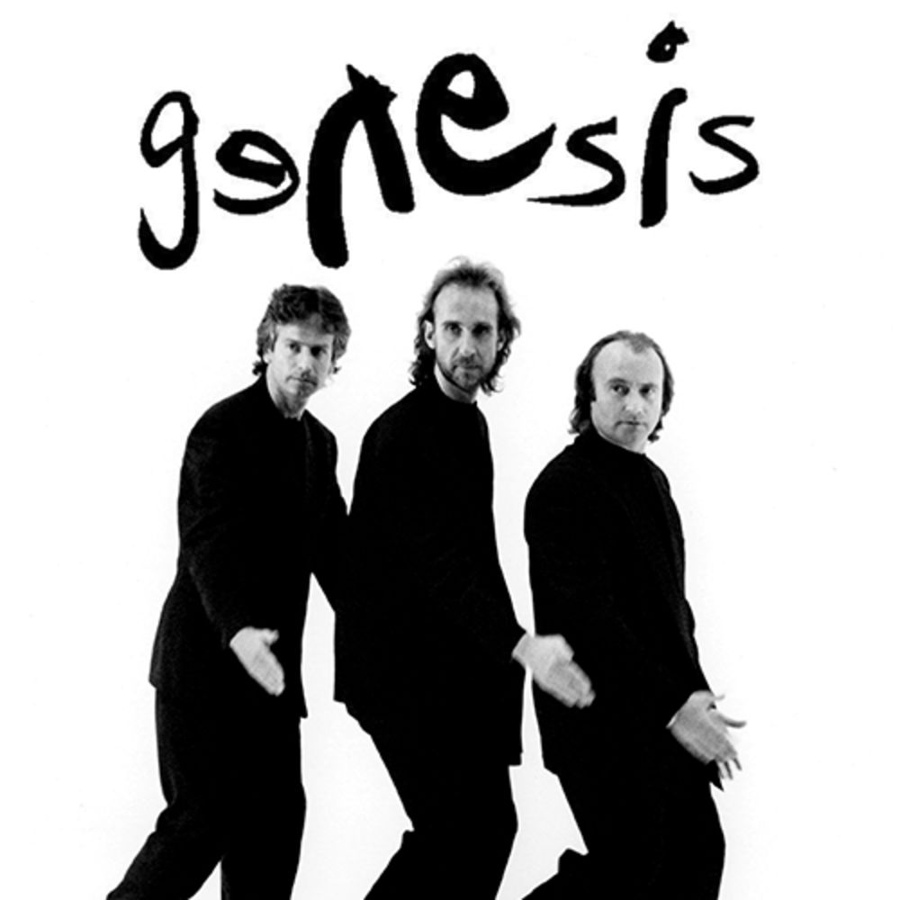
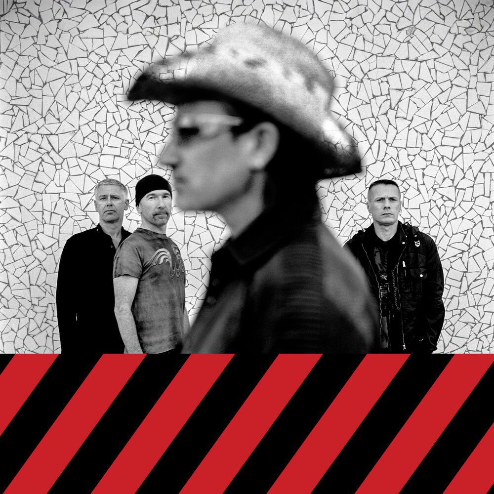
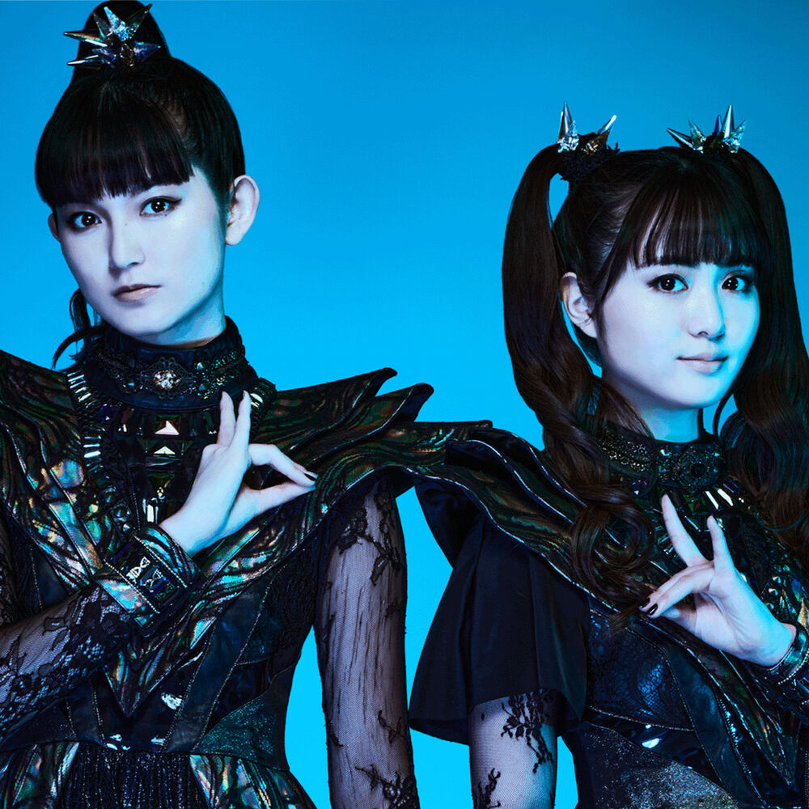

Client Milestones
| Artist / Client | Event | Original Date | Type | Anniversary |
|---|---|---|---|---|
| Stevie Wonder | Music of My Mind album released | Mar 3, 1972 | ALBUM | 54 yrs |
| Genesis | And Then There Were Three album released | Mar 3, 1978 | ALBUM | 48 yrs |
| Frank Zappa | Sheik Yerbouti album released | Mar 3, 1979 | ALBUM | 47 yrs |
| Loretta Lynn | Loretta album released | Mar 3, 1980 | ALBUM | 46 yrs |
| Metallica | Master of Puppets released | Mar 3, 1986 | ALBUM | 40 yrs |
| De La Soul | 3 Feet High and Rising | Mar 3, 1989 | ALBUM | 37 yrs |
| AJR | Ryan Met born | Mar 3, 1994 | ALBUM | 32 yrs |
| Foo Fighters | Foo Fighters live debut | Mar 3, 1995 | EVENT | 31 yrs |
| Camila Cabello | Camila Cabello born | Mar 3, 1997 | BDAY | 29 yrs |
| U2 Shop | Pop album released | Mar 3, 1997 | ALBUM | 29 yrs |
| BabyMetal | Momoko Okazaki (Momo-Metal) born | Mar 3, 3 | BDAY | 23 yrs |
| Dale Earnhardt Jr | Elliott Sadler's Xfinity Series Win - Bashas Supermarkets 200 - Phoenix 2012 | Mar 3, 2012 | EVENT | 14 yrs |
| AJR | Living Room album released | Mar 3, 2015 | ALBUM | 11 yrs |
| ATO Records | Brandi Carlile "The Firewatcher's Daughter" album released | Mar 3, 2015 | ALBUM | 11 yrs |
| Brandi Carlile | The Firewatcher's Daughter album released | Mar 3, 2015 | ALBUM | 11 yrs |
| ATO Records | Chicano Batman "Freedom Is Free" album released | Mar 3, 2017 | ALBUM | 9 yrs |
Artists — click for details

Stevie Wonder

Genesis

Frank Zappa

Loretta Lynn

Metallica

De La Soul
AJR

Foo Fighters

Camila Cabello

U2 Shop

BabyMetal

Dale Earnhardt Jr
A
ATO Records

Brandi Carlile